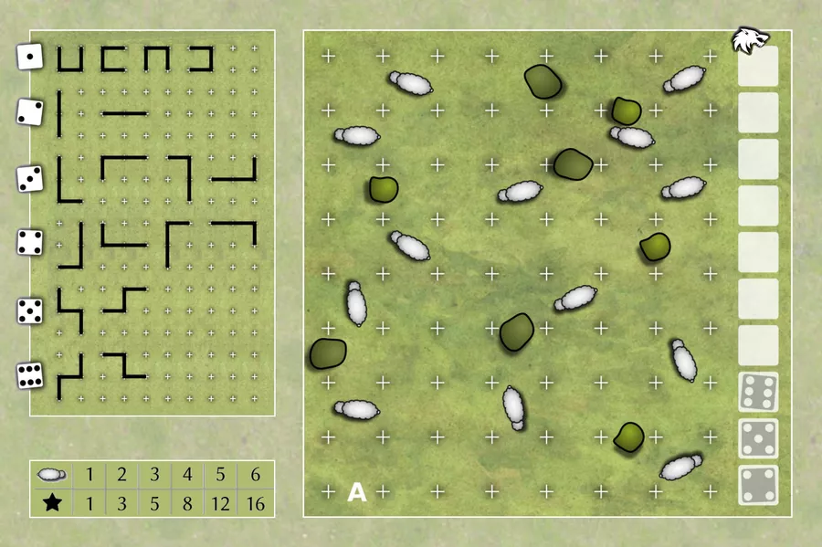
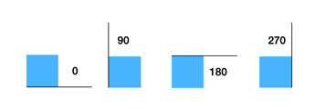
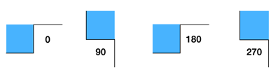
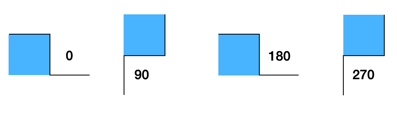

13 Sheep happens to be a cute roll-and-write game designed by Moritz Dressler that involves protecting a bunch of sheep on a grid by placing small fences that have pre-defined shapes.

The initial position of a certain number — typically 13, as the name suggests — of sheep over a 7x7 grid is given. Some grid edges are not available because there happen to be bushes: so you cannot fence them. The bushes do not protect the sheep either, the wolf can slide under them.
Your goal is to enclose as many sheep as possible: the ones that are not fully protected by fences may, alas, be at considerable risk when the inevitable wolf attack happens.
There are three main constrianing factors in this game:
- The shape of the fences that you can draw are determined by the roll of a die;
- You cannot overwrite lines that are already drawn, you cannot also draw over bushes;
- You have ~11 chances to place your randomly gifted fence shapes.
You can find out more about the game here, where you can generate board layouts to print and play as well.
I found this game a lot of fun to play, and I thought it would be lovely to be able to play it on a computer, where the user can decide how many rounds, sheep, and bushes they want to play with. Given also that chatGPT has been apparently remarkably adept at coding games, I figured I’d give it a shot1.
I describe my conversation with chatGPT below, but if you just want to cut to the case and check the game out, you can find the playable version here and the source here.
Here’s what we finally built:

And once you’ve finished playing you can share your accomplishment like so:

So, back to chatGPT. My first prompt was just a polite inquiry about willingness to participate in this exercise:
And well, it immediately made this, based on the prompt above: a game where you get to count to 13 sheep. Huh. Promising.
In my next few prompts, I steered it away from the default game. The first few steps just involved setting up the UI:
At this point I already had a nice-looking grid with 13 sheep on it (thanks to Flaticon for the cute sheep icon). The plus signs drawn on the boundary were oddly cropped out, so we fixed that next:
This didn’t immediately work but some nudging fixed it:
That worked — phew! Now we draw the bushes:
Next we get the dice roll UI up:
This actually worked out of the box, the next step was to make the roll dice functional:
So far, so good. Now all that was left was to get the fences drawn depending on what dice was rolled out.






This was perhaps the trickiest bit. My first attempt was this prompt here:
My hope was that the change of cursor would be a good way for the player to register that they need to move on the grid now. At this point, I was not thinking about the different orientations of the fences, because I was not sure about how to incorporate that into the UI (my first thought was to have the fences rotate on subsequent clicks until the player clicks on a confirm button, but that seemed too messy). I also did not give all six scenarios in one go since — from recent experience — the interface dies out on longer requests. You can prod it to continue from where it left off, but it’s typically messy.
In any case, we could not get the change of cursor to work. At this point, note that the code is also not tracking what borders are colored, so even as we got things to mildly work, we were often overwriting fences and bushes. So anyway, at some point I gave up and it was back to square one, but smaller steps. First, instead of a change of cursor, I just requested a canvas background color change to subtly communicate a change of game state:
Then we added a round tracker:
This took some back and forth to get working, since it was getting some details mixed up, but it was finally alright. I had to prompt more to take care of some edge cases and minor details, for instance:
Now we are back to actually trying to get the fences to be drawn. With some nervousness, I go:
At this point the code generated starts tracking what borders are visible. I did have to prompt it explicitly to update the earlier function that generated the bushes to feed into the visibility states. However, this went off pretty smoothly overall. For quite some time the fences drawn when the user clicked a grid cell were not the ones I wanted, but after a few nudges it got it about right.
Now it occured to me that I could actually show the orientations after the dice is rolled and the user can select one of them, and we can draw the appropriate fence after this selection is made.
Of course in the UI at the moment we just have these four numbers so it does not make a lot of sense to the player, so I whipped some images to show the user what fences would be drawn depending on what grid cell was clicked.
Now we come back to the fence drawing thing to account for the orientations as well:
Getting this going for all the 20 different cases was really the bulk of the back and forth. While it got the overall functionality right, there would be small and frequent bugs in the details. For instance, if a cell’s top border is being fenced, then the cell above it should have its bottom border’s visibility updated: it knows this, but frequently got combinations wrong, and so I did have to read the code generated carefully. I either fixed it manually when the bugs were minor, or went back to requesting corrections by explaining the issue when it was off by a whole lot.
You can see that some of the prompts are longer than the corresponding code :D
Maybe it’ll soon be possible to just upload a picture of the game instruction booklet and let chatGPT do the rest of the heavy lifting. Until then, this was the best I could think of: maybe there’s a shorter way? I did try using generic shape descriptions, but no luck on those.
Now the basic game was done, and there were three main features I’d have really liked to add at this point:
- Allow the user undo the previous fence placement.
- Count the number of protected sheep at the end.
- Make a version of this game where instead of rolling a dice, we let the user pick the fences they want: this can be useful for a multiplayer setting where we want the random choices to be the same for all players: so one player can roll the dice and the others can follow along.
I did try some of this: it’s impressive that chatGPT gets the main ideas right the first two requirements (the use of an action stack for implementing undo, and recognizing that we need some kind of flood fill algorithm for the score). However, all the implementations ended up being somewhat buggy and after some wrestling I decided to push these extras to the roadmap. The deterministic version of the game should not be hard to make, even manually at this point, so I hope to come back to it soon.
After this I mainly asked for chatGPT to let the user customize the parameters of the game:
It got this immediately right, and I wanted some styling:
and it’s response was:
Good to know! The modals worked out of the box, and it was easy to extend them so they asked for the number of sheep and bushes as well. The last thing I wanted to add was a sharing feature:
Now this it did remarkably well, except that when it tried to pass the entire image as a URL parameter, that didn’t work out. When I conveyed this, the response was:
Whoa… so ok, I don’t have developer accounts and I was not going to follow through, but this was definitely interesting!
I did interleave responses from chatGPT with help from Ghostwriter, which is the intelligence built into repl.it out of the box. Ghostwriter’s responses were usually not as sophisticated on comparable prompts, but on a couple of occassions chatGPT was completely lost on why something wasn’t working, but Ghostwriter would figure it out when asked pointed questions about an error. There seems to be some potential that they will be a good team — possibly also alongside Copilot, which I did not use at all here.
My experience with chatGPT and Ghostwriter as pair programmers was — I daresay — rewarding overall. When I first thought of doing this, perhaps partially intoxicated by all the hype, I figured I could get this done in a couple of hours at the most: I estimated twenty minutes for functional code, and about a 100 minutes for making up my mind about colors and fonts. This was a vast underestimate: I think I spent close to a good twelve hours (including a couple of early throw-away prototypes, and all the failed attempts on the flood filling) altogether2… at some point it did get a little addictive, and perhaps there was a sunk cost argument for not letting go halfway through.
As someone who does not know javascript, I found this to be a part empowering, part learning, and mostly amusing experience. It felt like picking up a natural language by directly talking to mostly fluent speakers who made random and small mistakes. My overall sentiments were very similar to the process described in this thread, where Ammaar Reshi uses GPT-4, Replit, MidJourney, and Claude to create a 3D space runner from scratch with ZERO [sic] knowledge of Javascript or 3D game programming: you should check this out if you are interested in a much more sophisticated demonstration for deploying AI tools to make games!
In its current form I think this also has interesting implications for how programming is taught: I hesitate to elaborate any further on this given how likely it is that any commentary will be obsolete by tomorrow. But in the very near term, I can imagine that reading, analyzing, and even learning alongside chatGPT could make for interesting experiences in the classroom.
Footnotes
Incidentally, I couldn’t find a playable version like this one online. If you know of one please let me know and I’ll be sure to add a pointer!↩︎
At least I’m not the only one spending hours in the plural.↩︎